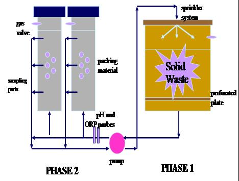

Energy
Research > Remote sensing | Energy | Water management | flow measurement | Evapotranspiration | International projects |
Energy
Producing Energy and Soil Amendment from Agricultural Wastes
M. A. Macias-Corral, Z. Samani, A. Hanson, Ray De La Vega
Abstract
Millions of tons of feedlot manure waste and cotton gin waste are generated in the United States each year. The significant amount of waste generated by these industries is a major environmental risk, contributing to contamination of air, water and soil. In addition, the generated waste is a significant financial liability for agricultural industry especially in light of the recent USDA-EPA- Unified National Strategy for Animal Feeding Operations. On the other hand, global depletion of fossil fuels and increasing demand for energy is leading into a national and international crisis. There is an urgent need to develop cost-effective technologies from renewable resources such as agricultural waste. The conversion of waste into energy can reduce the reliance on fossil fuel, reduce environmental pollution, and add value to agricultural byproducts.
A two-phase anaerobic digestion system was used to evaluate the feasibility of producing methane from agricultural waste. The cotton gin waste and bovine animal manure was combined to utilize the combined advantages of nutrient and cellulase bacteria with the high carbon content of the cotton gin waste. The results showed that 48% of the combined waste can be converted into methane producing 87 m3 of STP methane gas per ton of combined waste under mesophilic condition. The average methane concentration in the produced gas was 72%. The research also showed that combining manure with cotton gin waste results in 35% higher gas production per unit of digester volume. The nutrient analysis of the digestion residual shows that it can be used as soil amendment and has considerably higher nitrogen content than aerobically composted manure.
Key words: Energy, Animal Waste, Environment, Anaerobic digestion
Online presentation slides
|  |

(c) Zohrab A. Samani